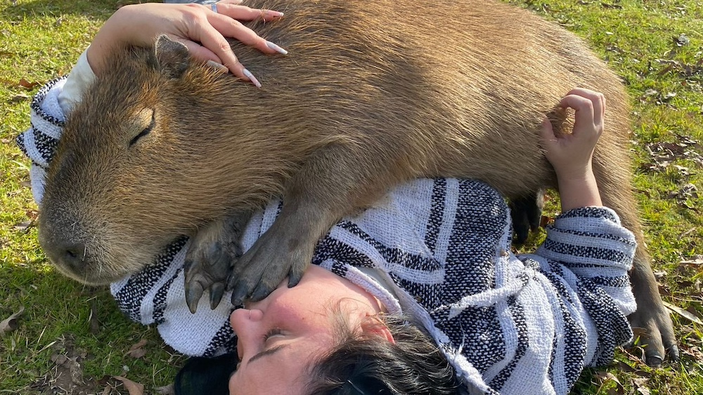
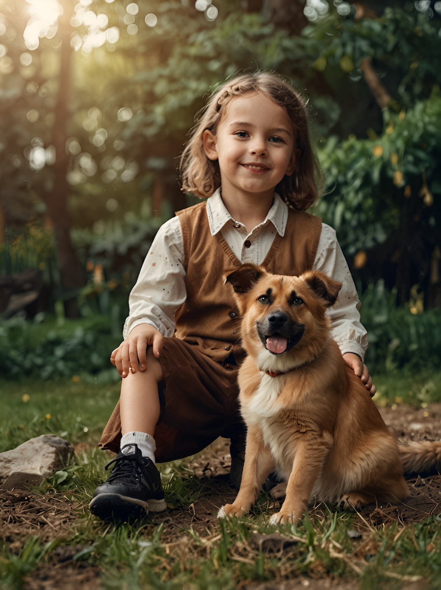

El municipio de Tigre, situado en el delta del Paraná, es hogar de una rica biodiversidad. Entre sus habitantes más emblemáticos se encuentran los carpinchos, que se destacan por su sociabilidad y adaptabilidad. La conservación de estas especies no solo es crucial para el ecosistema local, sino que también fomenta un equilibrio natural que beneficia a todos.

Los carpinchos, junto a diversas especies de peces, aves y reptiles, desempeñan un papel vital en la salud dl hábitat. Proteger su entorno es fundamental para asegurar la supervivencia de estas especies y mantener la riqueza natural de Tigre. La educación ambiental y el respeto por la fauna local son pasos esenciales para fomentar un futuro sostenible en la región...
Blog
En nuestra clínica veterinaria, entendemos que el bienestar de tu mascota es una prioridad.
La salud y el comportamiento son aspectos fundamentales para garantizar una vida plena y feliz para nuestros compañeros.
Por eso, hemos recopilado una serie de recursos que te ayudarán a comprender mejor las necesidades de tu mascota.
Acciones para la conservación de la fauna en Tigre
La conservación de la fauna local en Tigre es un compromiso que todos los habitantes y visitantes deben asumir. Con una población creciente de carpinchos y una variedad de peces que habitan sus ríos y arroyos, es esencial implementar acciones que protejan estos recursos naturales.
Iniciativas como la limpieza de espacios públicos, la creación de reservas naturales y la promoción del ecoturismo son estrategias efectivas para cuidar la biodiversidad local. Además, fomentar la conciencia sobre la importancia de no perturbar a los animales en su hábitat puede contribuir a la preservación de estas especies. Con el esfuerzo conjunto de la comunidad, Tigre puede seguir siendo un refugio para su fauna única...
Consejos e información sobre la salud de los perros
Mantener a tu perro saludable es la prioridad principal. Nuestros artículos especializados abarcan diversos temas para ayudarte a lograrlo. Desde el cuidado de la piel y del pelaje hasta la higiene dental y la salud digestiva, proporcionamos información valiosa sobre cómo prevenir problemas de salud comunes y tratar las afecciones existentes...
Leer más →Perros y niños: Cómo garantizar una buena relación

Con la llegada de un bebé o un perro a la familia, uno de ellos puede sentirse desplazado o incluso ver al otro como un intruso...
Leer más →Al rescate del sofá
Nuestros amigos felinos son discretos y ordenados la mayor parte del tiempo, aunque a veces tienen conductas que nos pueden sacar de quicio, como por ejemplo, rascar ese sofá que tanto nos gusta...
Leer más →